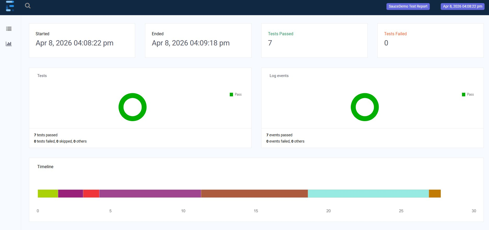
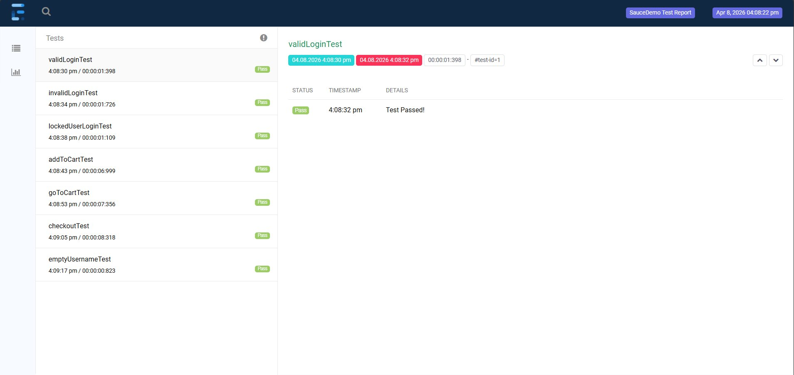
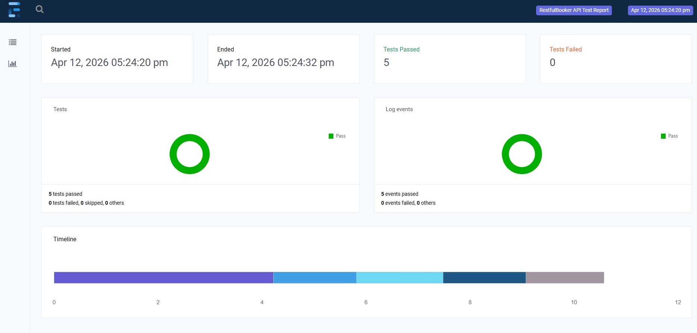
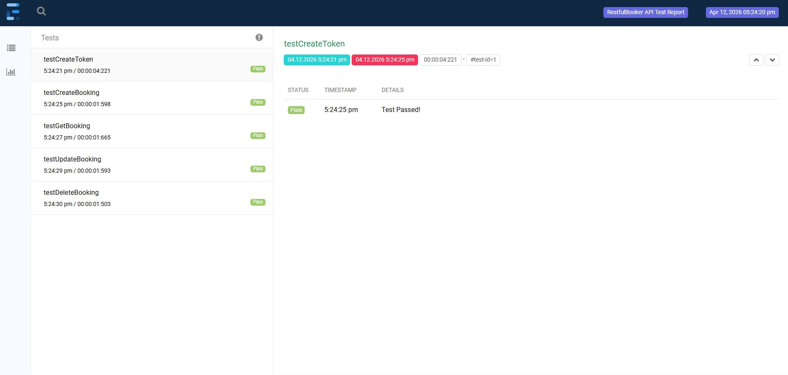

// QA Automation Engineer · Singapore
A Civil Engineer turned QA Automation Engineer — 7 years on construction sites taught me that catching defects early saves everything. That same mindset now drives my approach to test automation, backed by 2 live GitHub projects and a passion for software quality.
// 01 — projects
UI Automation
End-to-end UI test suite covering login, cart, and checkout flows. Implements Page Object Model for clean, maintainable test architecture with both positive and negative test scenarios.
EXTENT REPORT — 7/7 PASS


API Automation
Full CRUD API test suite for a booking management system. Covers token authentication, booking creation, retrieval, update, and deletion with proper assertions and response validation.
EXTENT REPORT — 5/5 PASS


// 02 — what i bring
// 02 — skills
// 03 — journey
// 04 — contact
I'm actively looking for QA Automation roles in Singapore. If you're hiring or know someone who is — I'd love to connect.